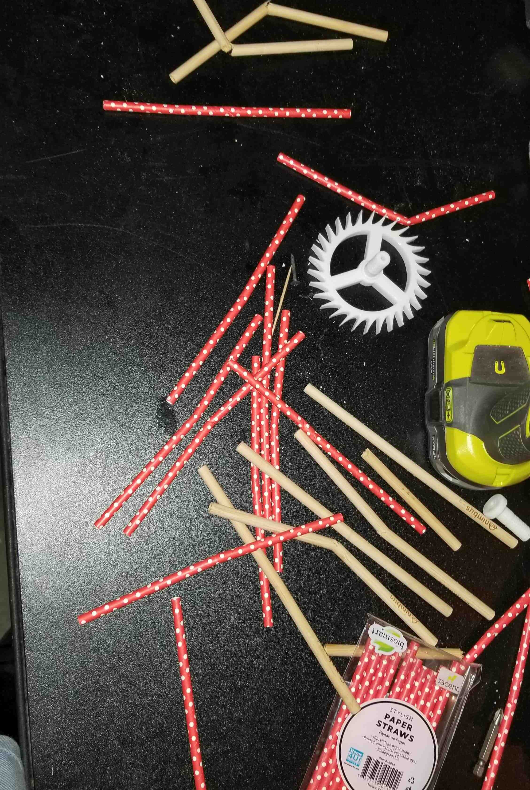

Bamboo Straw Supremacy Research

Paper and Bamboo straws after Izod impact test
For the MITES Semester, formerly MOSTEC, summer program, I was a part of the materials science course during the academic phase.
One of the projects we got to work on during the program was a research project. My partners and I came up with the idea to do our
research on bamboo straws and other plastic straw alternatives. Using our knowledge on material fractures and homemade contraptions,
we were able to make this research possible.
Abstract
The aim of this project is to compare the material properties of bamboo and
paper straws (as alternatives to plastic straws). Flexural tests and water absorption
tests were performed on both types of straws after they were submerged in water
for varying amounts of time: for both types of straws, they were submerged in
fresh water; for the bamboo straws, they were also tested after being submerged
in salt water of a predetermined concentration. Additionally, an impact test was
conducted on both straws when they are dry and only the bamboo straws after
absorbing water for a predetermined amount of time. Paper straws absorbed an
average of 2 grams of water over the three trials, while the non salinated bamboo
straws absorbed an average of 1.67 grams of water and the salinated bamboo straws
absorbed an average of 1.93 grams. For the flexural strength tests, bamboo straws
had an approximately 15-18 times higher modulus of rupture - the maximum fiber
stress at failure. Lastly, for the impact test, there was a clear trend that indicates
that strength increases in this order: paper straws, bamboo straws, and wet bamboo
straws. This study provides novel material testing methods and results for paper
and bamboo straws which illustrates the superiority of bamboo straws over paper
straws in many different areas of material property.
The Process
Throughout the materials science course offered by MITES Semester, I learned about the mechanics
behind molecular bonds, bond structures, and the mechanics behind different types of fractures.
Furthermore, I was able to apply information that I had garnered throughout the AP Chemistry course.
Developed a research that will test as much relevant data as possible while fitting within the budget and time
limit that we had.
Was solely for the designing, building and testing of a homemade Izod impact test contraption to test the impact
strength of the different straws in different conditions.
Used LaTeX to create document and lay out gathered information in a neat and orderly manner to report our findings.
View Research Paper